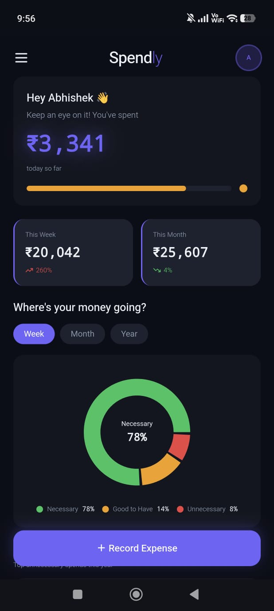
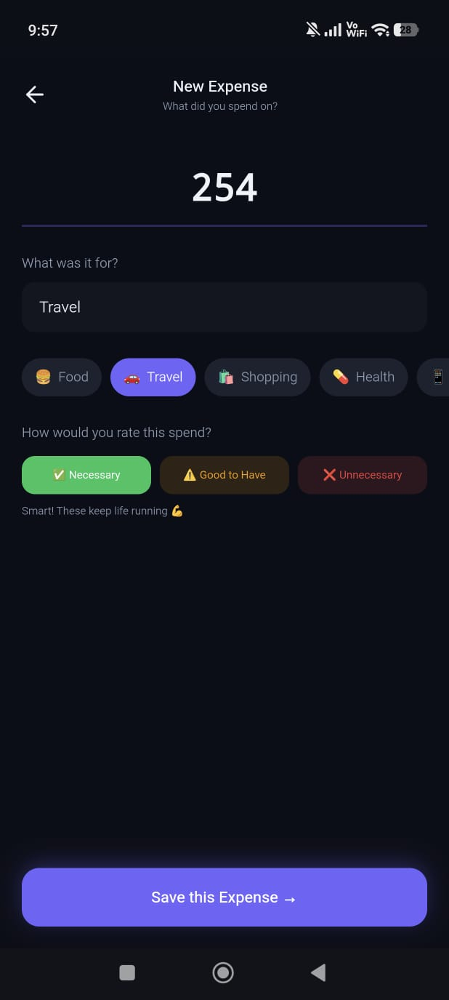
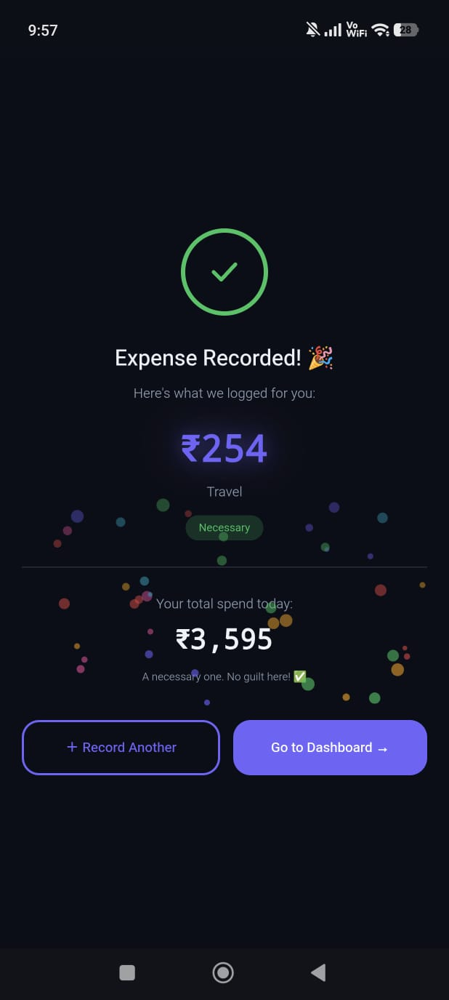

Most budget apps track what you spent. Spendly asks if it should've been
I replaced budget tracking with one honest question about each spend. I built and shipped it on my own, and it has a growing group of active users.
Role
Product designer and builder
Platform
Web app (PWA)
Tools
Claude, Lovable, Supabase, Vercel
Users
25 users, 12 to 16 daily active
Spendly



How it started
I used to track my expenses in Excel.
01
I'd label each one: Necessary, Good to Have, Unnecessary.
02
It was tedious. Open laptop, enter, calculate, go back and analyse.
03
But that one question was the most honest thing I ever asked myself about money.
04
I just needed a better tool for it. That tool became Spendly.
Recording a spend in Spendly
The story behind Spendly
From a notebook habit to a live app
01
Strict questions. Valuable lessons.
My father always took a spending report. It irritated me, but taught me the value of money.
02
A habit that stayed.
My mother still records every expense in a notebook. From notebook to Excel sheets.
03
My own tracking system.
Not just how much I spent, but how wisely I spent.
04
The problem.
Open laptop. Open Excel. Enter, label, calculate. Missed entries. Forgot amounts. Too much manual tracking.
05
One thought.
"What if there was a simple application for this?"
06
The limitation.
I'm a designer, not a developer. Frontend, backend, database and deployment were too much for a personal project.
07
AI changed things.
Learned. Figured out. Built in a few hours. With Claude, Lovable, Supabase, and Vercel.
08
Spendly went live.
Using it daily on my phone. Replaced mom's notebook. Loved by family & friends.
09
Still learning. Just the beginning.
On my way to becoming an AI-UX Designer. More to learn. More to build. More to impact.
Step 01 · And
People track their spending, but rarely reflect on it
The habit
People around me, like my mother, cousins and family, were writing every expense in notebooks. The discipline was real. The tool was limited.
My own system
I used Excel. Labelled every spend. It worked, but only if I remembered to open the laptop, enter the data, and do the math. I often didn't.
The real question
Every app I explored while designing this told you how much you spent. None asked whether you should have.
Step 02 · But
Moneyview and Walnut track spending, but neither asks if it was worth it
Moneyview
Walnut (Axio)
Spendly
Tracking
Auto-SMS
Auto-SMS
Manual, intentional
Categories
System-set
System-set
User-labelled
Core question
Where did it go?
Where did it go?
Was this worth it?
Insight layer
Spend totals
Spend totals
Wise vs unwise split
Target user
Everyone
Urban digital natives
Mindful spenders, homemakers, salaried
Auto-sync is convenient. But convenience removes the one moment of reflection that changes behaviour: the moment you consciously record a spend.
Step 03 · Therefore
The whole product is one three-word label
Necessary
Things that keep life running. Rent, bills, medicines, groceries. Record without guilt.
Good to have
Things that add comfort but aren't essential. Worth tracking, because this is where habits form.
Unnecessary
Things you didn't need. The app doesn't judge you. But over time, the data will.
One question at the point of entry: was this worth spending on?
Step 04 · How I built it
I'm a designer. I don't write code. That was never going to stop me
1
Designed
End-to-end UX: flows, the labelling system, all screens and interactions. Every decision was mine.
2
Built
AI-assisted tools to write and ship real code. A working PWA. Live on the web.
ClaudeLovableSupabaseVercel
3
Shipped
No app store. No marketing. Shared manually to real people. 25 users. 12 to 16 active.
Step 05 · The product
Three screens. One flow
DashboardWise vs unwise at a glanceRecordLabel your spend in 5 secondsSavedInstant confirmation, no guilt
Spendly, live demo
Step 06 · Who uses it
I didn't target a market. I found one
Who came back
Homemakers managing household budgets. Working women balancing personal and household finances. Salaried middle-class users for whom every rupee has a purpose. Users are mainly in India, where many households still track spending in notebooks.
What that means
Not power users. Mindful ones. People who want to spend better, and care about more than tracking faster. Spendly was built for them.
Step 07 · What this taught me
Being a founder taught me what being a designer never could
01
Ownership sharpens every decision
As a designer I could recommend anything. As a founder every call had a consequence I had to live with. That changed how I think.
02
Constraints are a design tool
Not knowing code didn't stop the product. It forced me to find tools that could execute my thinking. Vision drove the build.
03
Real validation is behavioural
Nobody told me it was good. They just kept using it. That silence was the best feedback I got.
04
Small and intentional beats large and passive
12 active users using it exactly as intended is more meaningful than 10,000 passive downloads. I built for depth. That was the choice.
Founder's note
Any company that hires me gets a designer who has shipped something real and made product decisions as well as design decisions. I know what it means to own something end to end.